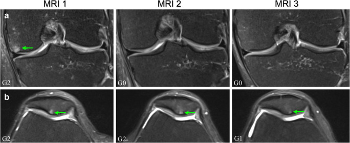
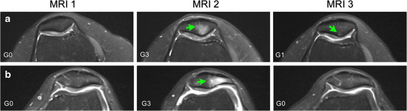

За 20 лет в профессиональном спорте я слышала этот вопрос чаще любого другого. «А колени?! Ты же убьёшь колени!»
Знаете, что меня поражает? Наука закрыла этот вопрос ещё в 2017 году. И ответ там ровно обратный тому, что вам говорили мама, коллега и сосед по подъезду.
Смотрите как интересно. У людей, которые «берегут колени» на диване, артроз находят примерно в 10 случаях из 100. У бегунов-любителей - в 3,5. Это не моё мнение и не тренерская вера. Это данные по 114 тысячам человек.
А теперь ещё раз, медленно: так кто кому убивает колени?
Короткий ответ: вреден ли бег для коленей
Нет, любительский бег не вреден для коленей и не «стирает» хрящ. Крупные исследования показывают обратное: у бегунов-любителей остеоартроз коленного и тазобедренного суставов встречается примерно в три раза реже, чем у малоподвижных людей. Хрящ питается только через движение, поэтому регулярная умеренная нагрузка делает его толще и плотнее. Риск растёт не от бега как такового, а от избыточного веса, старых травм, резкого роста объёмов и предельных нагрузок без восстановления.
Дальше - подробно. Откуда взялись эти цифры, что происходит с хрящом на самом деле и почему колени всё-таки болят, если бег такой полезный.
Почему хрящ не «стирается»: эффект губки
Главная ошибка в голове - это сравнение. Колено представляют деталью машины. Дверной петлёй, которая обязательно сотрётся от трения. Логично же? Крутишь чаще - изнашивается быстрее.
Только тело - не машина. Оно живое и оно адаптируется. И вот тут начинается самый цимус.
В суставном хряще нет кровеносных сосудов. Вообще. Ни одного. Единственный способ, которым хрящ получает еду, - это диффузия из синовиальной жидкости, той самой смазки внутри сустава.
А теперь смотрите, как это работает в беге:
- Фаза опоры. Стопа приземляется, нагрузка сжимает хрящ, и он выдавливает из себя отработку - продукты обмена.
- Фаза полёта. Давление падает, и хрящ, как губка, всасывает свежую жидкость с питательными веществами.
Шаг за шагом. Сжал - впитал. Сжал - впитал.
Без этой циклической компрессии хрящ просто голодает. И деградирует. Вот вам и весь секрет «безопасного» дивана: он не бережёт сустав, он лишает его питания.
Есть и вторая часть. Исследования состава синовиальной жидкости показывают, что даже 30-минутная пробежка заметно снижает концентрацию провоспалительных цитокинов внутри сустава - это молекулы, которые запускают и поддерживают воспаление. Проще говоря: ударная нагрузка вымывает маркеры воспаления в кровоток и заодно улучшает смазку сустава.
Бег не изнашивает колено. Бег его кормит.
Что говорят исследования: 114 000 человек и три больших работы
Я не люблю фразу «учёные доказали». Поэтому вот конкретика - кто, когда, сколько людей.
Метаанализ JOSPT, 2017 год. Одно из самых масштабных исследований по теме, данные более 114 000 человек. Сравнивали риск артроза коленного и тазобедренного суставов у трёх групп:
Любительский бег снижает риск разрушения суставов почти в три раза по сравнению с сидячим образом жизни. А проблемы начинаются только там, где ультраобъёмы, предельные нагрузки и полное игнорирование восстановления.
Я, кстати, из третьей колонки. 20 лет элитного спорта - это не про здоровье, это про результат любой ценой. И я честно скажу: цена есть. Но между «профессиональный спорт на износ» и «три пробежки в неделю» - пропасть. Не надо примерять мою колонку на себя.
Инициатива по изучению остеоартрита (Lo et al., 2017). Анализировали людей с многолетним беговым стажем. Вывод: стаж бега не связан с повышенным риском симптоматического артроза. Более того - боли в коленях у бегунов регистрировали реже, чем у их неспортивных ровесников.
Исследование активных марафонцев (Ponzio et al., 2018). Взяли тех, кто финишировал минимум в пяти марафонах и бегает не меньше 16 км в неделю. Казалось бы - вот они, убитые колени. А получилось наоборот: артрит у них встречался значительно реже, чем в среднем по популяции.
И главное в этой работе - что назвали факторами риска. Возраст. Высокий индекс массы тела. Старые травмы, например разрыв связок в прошлом.
Километраж в этом списке отсутствует.
Новые данные: как бег «чинит» колени
Если старая статистика просто фиксировала факт - «бегуны не разваливаются», - то работы последних лет объясняют механизм. И вот тут исследования реально подлетели: фокус сместился с вопроса «вредит ли бег» на изучение его лечебного эффекта.
Марафон уменьшает микроповреждения. Взяли 82 здоровых человека среднего возраста, которые готовились к своему первому марафону. Сделали МРТ коленей за 6 месяцев до старта и через две недели после финиша.
На стартовых снимках у многих нашли бессимптомные микроповреждения - отёк костного мозга под хрящом. Человек ничего не чувствует, а на МРТ видно. После марафонской подготовки и самой гонки эти повреждения уменьшились. Плюс улучшилось состояние хряща надколенника. И это не разовый эффект: при повторном обследовании через полгода улучшения сохранились.
Стоп. Давайте ещё раз. Люди пробежали марафон - и их колени стали лучше, чем были до подготовки.
Хрящ становится толще. Обзоры структуры коленного сустава у бегунов на длинные дистанции показывают: под регулярной нагрузкой хрящевая ткань активнее вырабатывает протеогликаны - вещества, которые держат воду и отвечают за упругость. Хрящ не стирается, он уплотняется. Формируется естественный щит против возрастных изменений.
А что действительно бьёт по суставу. Продолжается когортное исследование TRAIL - там участвуют атлеты с историей операций на коленях. Рекреационный бег там не признан самостоятельной причиной остеоартроза. Главный удар наносит избыточный вес: при беге нагрузка на сустав в несколько раз превышает вес тела, поэтому каждый лишний килограмм умножается.

Верхний ряд - бедро левого колена 54-летнего мужчины: было G2, после марафона стало G0 и таким и осталось. Нижний ряд - надколенник 48-летней женщины: сразу после гонки без изменений (G2), а через полгода лучше (G1).
Источник: Horga L.M. et al., Skeletal Radiology, 2020. Публикуется по лицензии CC BY 4.0.
Почему тогда болят колени после бега
А вот это честный вопрос. Потому что болят же. Я это вижу каждый сезон у новичков.
И весь миф про «изнашивание» живёт ровно на одной подмене понятий. Люди путают две абсолютно разные вещи:
- Дегенерация хряща - это артроз. Годы, десятилетия, возрастные изменения.
- Перегрузочная травма - это мягкие ткани. Мышцы, связки, сухожилия. Недели.
Боль, с которой сталкивается начинающий бегун - пателлофеморальный синдром (боль вокруг коленной чашечки) или синдром илиотибиального тракта, ITB (боль сбоку колена), - это почти всегда вторая история. Не сустав разрушается. Перегружено то, что вокруг сустава.
И знаете, что мне нравится в том исследовании больше всего? Оно не прячет неудобное. У части участников отёк после марафона наоборот появился. Вот эти снимки:

Вот это и есть честная картина. Нагрузка действительно оставляет след. Но здоровое тело этот след убирает - если дать ему время.
Источник: Horga L.M. et al., Skeletal Radiology, 2020. Лицензия CC BY 4.0.
Ни один из участников при этом ничего не чувствовал. Организм сам разобрался. Проблемы начинаются там, где ему не дают на это времени - и грузят снова, и снова, и снова.
Коротко, четыре главные причины:
- Нарушен принцип постепенности. Резкий скачок объёма или интенсивности. Сердце и лёгкие адаптируются быстрее, чем связки и сухожилия - вот в чём ловушка. Дыхание уже позволяет бежать дальше, а опорно-двигательный аппарат ещё нет. Мышцы перестают амортизировать удар, и всё летит в сустав.
- Слабые стабилизаторы. Мышечный дисбаланс, слабые ягодичные и слабый кор ломают биомеханику шага. Колено начинает «заваливаться» внутрь, и нагрузка идёт под неправильным углом.
- Лишний вес без базовой подготовки. Начинать бег с высоким ИМТ, пропустив ОФП и ходьбу, - это самый быстрый способ поймать боль и поверить в миф.
- Старые травмы. Резекция мениска, пластика ПКС после контактных видов спорта - такие вещи меняют углы нагрузки в колене навсегда. Это не запрет на бег. Это повод строить план иначе.
Видите, что общего у всех четырёх пунктов? Ни один из них не называется «бег». Все четыре называются «как именно вы бегаете».
Как бегать, чтобы колени не болели: 5 правил
Теперь то, ради чего вы, скорее всего, сюда и пришли.
- 1. Растите объём медленно. Ориентир - плюс не больше 10% в неделю, и каждую четвёртую неделю разгружайте. Скучно? Скучно. Но именно здесь включается режим «дятла»: делать однообразно и регулярно. Работает только так.
- 2. Бегайте медленнее, чем хочется. Основной объём - на низком пульсе. Это снижает ударную нагрузку и даёт тканям время адаптироваться. Как определить свой темп и зоны - разбираю подробно в статье про бег по пульсу.
- 3. Силовая - это не опция. Два раза в неделю: ягодичные, кор, стопа. Приседания, выпады, мостики на одной ноге, планка. Сильные ягодицы - это и есть ваша защита колена. Слабый таз - и колено остаётся один на один с нагрузкой.
- 4. С лишним весом начинайте не с бега. Ходьба и ОФП 4–8 недель, потом короткие беговые отрезки. Не наоборот. Каждый килограмм в беге умножается на несколько.
- 5. Восстановление - часть работы, а не награда за неё. Сон, еда, разгрузочные недели. Ткани перестраиваются в покое, а не на тренировке. Тренировка - это только импульс.
И отдельно про боль. Тянущий дискомфорт после непривычной нагрузки - это одно. Острая боль, отёк, боль при спуске по лестнице или боль, которая не уходит несколько дней, - это повод не терпеть и не гуглить, а идти к врачу. Терпеть через острую боль - не героизм. Это способ превратить мелкую проблему в операцию.
Чтобы не гадать «медленно или нет» - введите свой результат на любой дистанции. Калькулятор посчитает VDOT и покажет безопасный темп для лёгкого бега, с которого и строится вся база.
Открыть калькуляторПодытожу
Наука по этому вопросу высказалась достаточно однозначно. Бег не причина износа коленей. Наоборот - это рабочий способ сделать хрящ плотнее, наладить его питание и снизить воспаление внутри сустава.
Разрушают колени не километры. Разрушают спешка, лишний вес, слабые мышцы и привычка не восстанавливаться.
Колени изнашиваются не от бега. Они изнашиваются от его отсутствия.
А мне правда интересно… вам говорили «не бегай, колени посадишь»? И кто это был - врач, мама, коллега? Расскажите, очень хочу знать 🤗
Частые вопросы
Правда ли, что бег изнашивает коленные суставы?
Почему у начинающих бегунов болят колени?
Можно ли начинать бегать с лишним весом?
Можно ли бегать после травмы или операции на колене?
Инна Рыжих - тренер по бегу и триатлону, мастер спорта. 20 лет в профессиональном спорте и более 10 лет тренерской практики: готовлю атлетов и развиваю любительский триатлон вместе с командой REDHEAD.
Нужен план, который учитывает ваши старые травмы и текущую форму, - посмотрите форматы работы или результаты моих спортсменов.
- Alentorn-Geli E. et al. The Association of Recreational and Competitive Running With Hip and Knee Osteoarthritis — JOSPT, 2017
- Lo G.H. et al. Is There an Association Between a History of Running and Symptomatic Knee Osteoarthritis? — Arthritis Care & Research, 2017
- Ponzio D.Y. et al. Low Prevalence of Hip and Knee Arthritis in Active Marathon Runners — JBJS, 2018
- Horga L.M., Henckel J., Fotiadou A. et al. Is the immediate effect of marathon running on novice runners' knee joints sustained within 6 months after the run? A follow-up 3.0 T MRI study — Skeletal Radiology, 2020;49(8):1221–1229. Снимки МРТ в статье приведены из этой работы по лицензии CC BY 4.0.
Материал носит информационный характер и не заменяет консультацию врача. Если у вас есть диагностированное заболевание суставов или последствия травмы - согласуйте беговые нагрузки со своим специалистом.